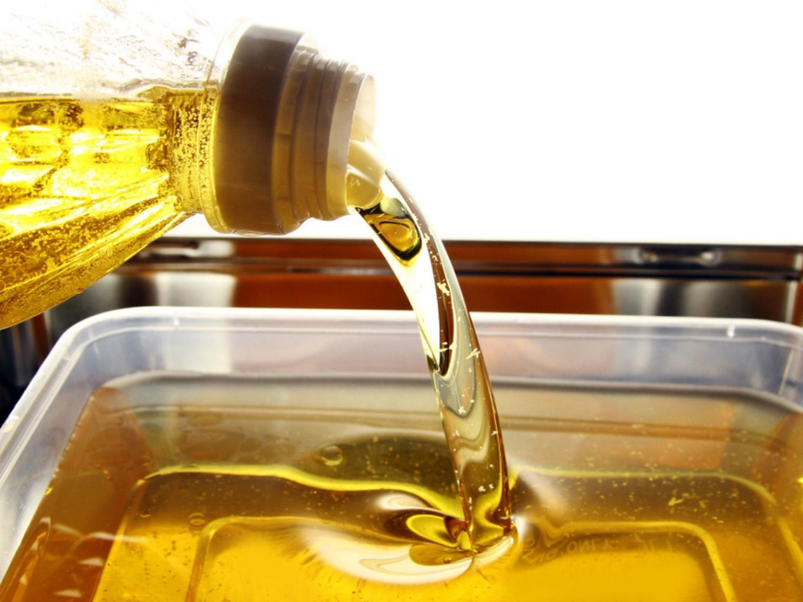
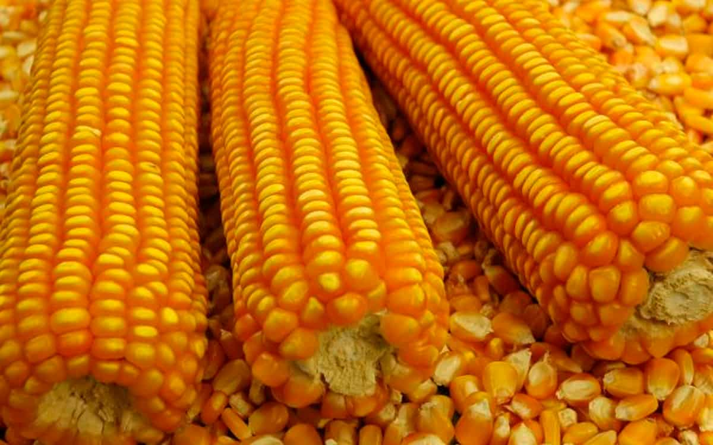

Alimentos que Prejudicam o Meio Ambiente
O óleo é uma gordura que devido às substâncias insolúveis em água presentes em sua composição, caso descartados de maneira irregular, podem obstruir tubos e encanamentos, provocar o refluxo de esgoto ou ainda poluir os corpos hídricos e afetar significativamente a vida aquática. Diante do exposto, esse componente deve ser descartado em lugares especificos. Existem escolas que coletam olho que é convertido em sabão de coco. Projetos como esse devem ser valorizados pela sociedade, para que assim haja uma maior conscientização da população e, conforme o tempo, diminuir os níveis de poluição do meio ambiente.
Primeiramente o Brasil e o 3° pais que mais colheita milho. O milho afeta em bilhões de litro de aguas e no solo, pois são fertilizantes hídricos, prejudicando diretamente o solo.
